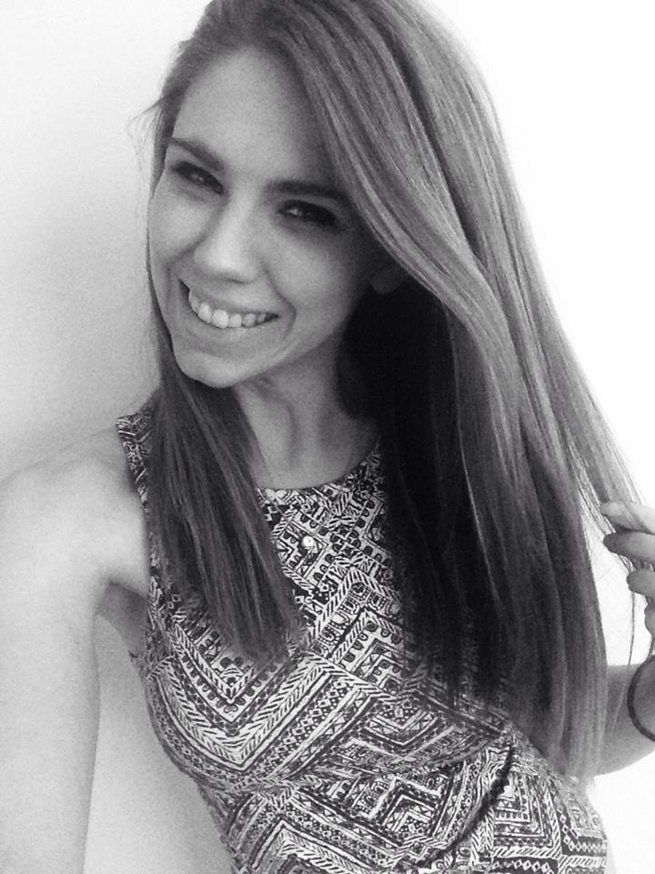

I truly am at a beautiful point in my life. 2015 was the year it all fell into place for me. 2016 will be the year I actually stick to my New Years resolution.
Last January I took an editorial internship with Fashionista.com in SoHo. Three times a week I would clock in at 9am to read up and report on the latest in fashion industry news. From there I was hired as a fashion news reporter for Bustle.com -- my first official writing job since graduating in May 2014.
Bustle was the start of something new, and something great. I will be forever thankful for the opportunity to write alongside some of this industry's strongest women, strongest voices. It was through this online community that I had my first taste of celebrity exposure -- Bella Thorne and Paris Hilton both recognized and/or thanked me for my features on their latest happenings (Bella went blonde, Paris posing as a seductive Bible babe). I fell in love with the job. It honestly never felt like work. It was a constant thrill to finish four features in a six hour shift, and promote my work through social media, hoping to get noticed.
Eventually, between Bustle and writing sparsely for SheKnows.com, I started to look for a full time position. Working from home was convenient, of course. I'd be at the gym almost six times a week before working from 8am-6pm, spend my weeknights watching The Big Bang Theory with my parents until the much anticipated weekends spent with my now fiance. But after two years of internships all over the city, I missed New York, and the social aspect of an office.
On September 30, 2015 I said goodbye to Bustle and was hired as the Beauty Editor for Hearst Publication's startup website BestProducts.com. These days I commute into the city from central New Jersey Monday through Friday. I walk from Penn Station to the Sheffield building to and from work, a total of 50 blocks per day. While I pride myself on being a beauty buff by day, I am a fitness fanatic after hours. Unfortunately, though, employment in the city has put up a barrier between myself and the gym.
By the time my train rolls into the station at 6:30, I'm tired from the day. I've made plenty of excuses over the past three months, convincing myself one hour a week lifting weights to strengthen my arms was enough to satisfy my craving to fulfill a healthy lifestyle. But really, I missed my toned beach body and its slender curve. It was time to get back to business, so on the first Monday of January, I signed up for the Crush Fitness program, and to make sure I follow through, I will be documenting my efforts here.
But this blog is about more than physical beauty. While I will be exploring the brilliant effects of cosmetic artistry, and pushing myself through Crush, the goal of this writing project is to explore my inner strength and who I am as a person. The goal is to improve myself; to be the best Julia I can be. This time next year, I'll be a mere few months away from marrying my best friend, and I am to figure out what kind of wife I will be, what kind of person.
Beauty, I've come to find, is much more than an eyeshadow palette and washboard abs. It's watching the gentle rise and fall of the love of your life's peaceful, sleeping body. It's a cup of tea with your mother, and laughing with your sisters. It's teaching your niece to color in the lines.
Beauty is moments. This blog is about appreciating them.